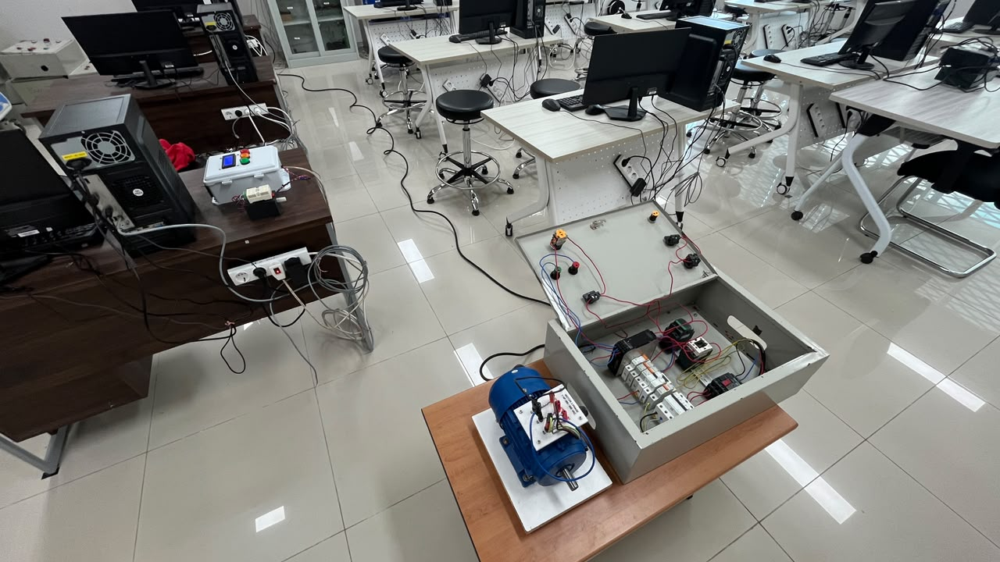
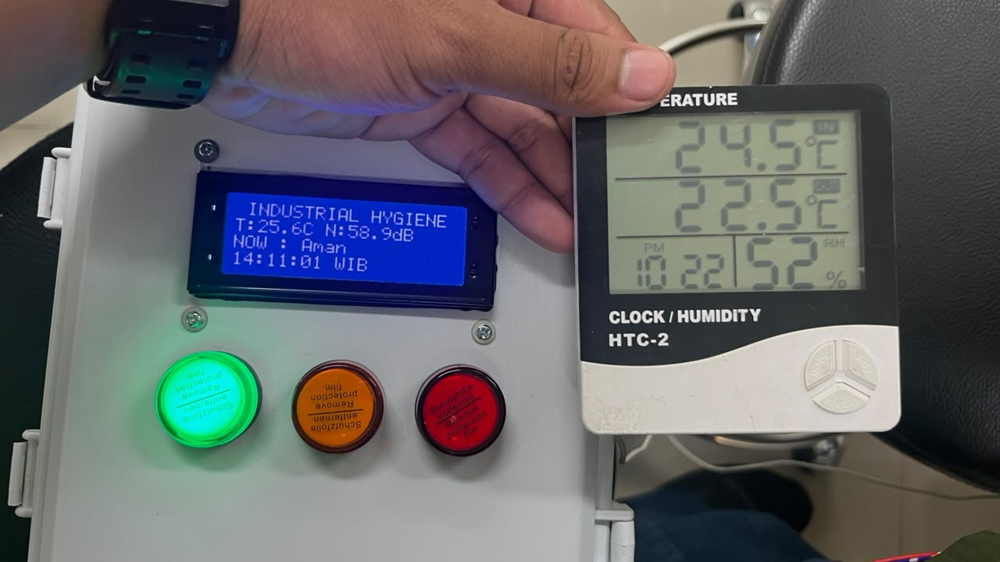
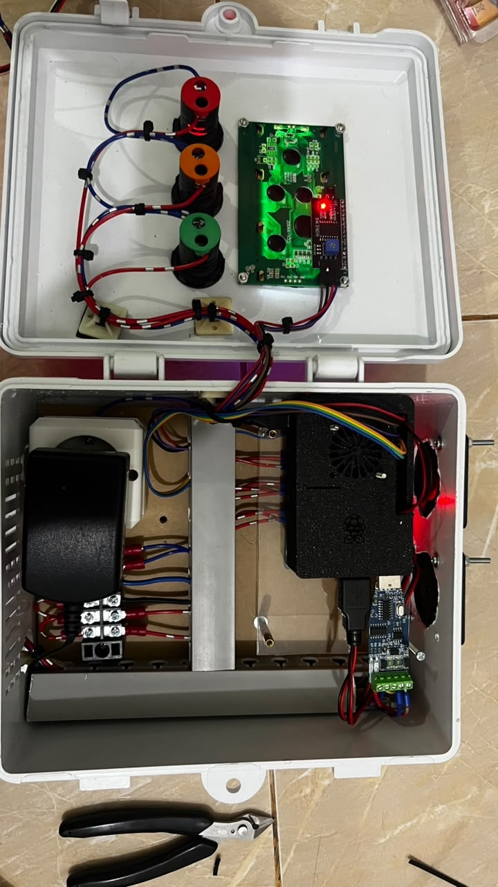
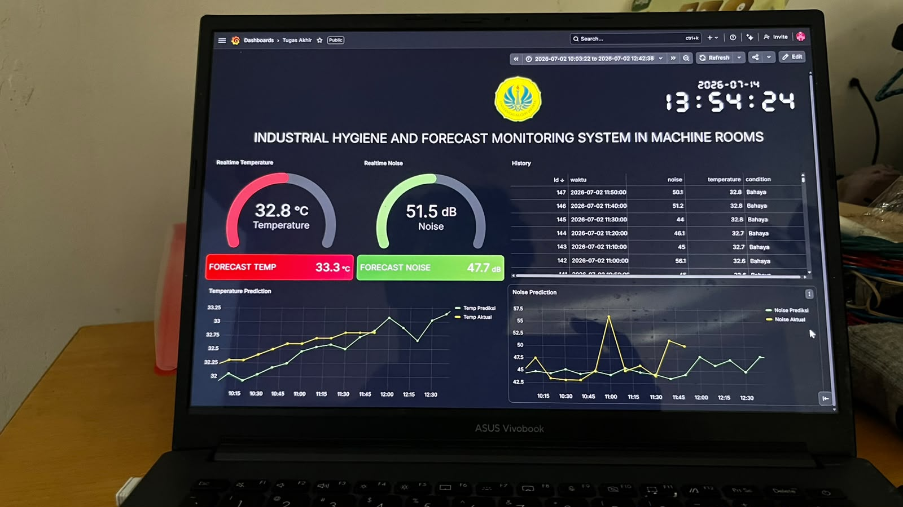

01
IoT-Based Industrial Hygiene Early Warning System with Hazard Condition Prediction Using Artificial Neural Network–Multi Layer Perceptron (ANN-MLP)
This Skripsi project developed an IoT-based Industrial Hygiene Early Warning System to monitor room temperature and noise levels in real time. The system uses sensors with Modbus RTU communication and a Raspberry Pi as an edge computing device to process and transmit the collected data. An Artificial Neural Network–Multi Layer Perceptron (ANN-MLP) model is implemented to predict room conditions up to one hour ahead, enabling the system to provide early warnings of potential hazardous conditions.



